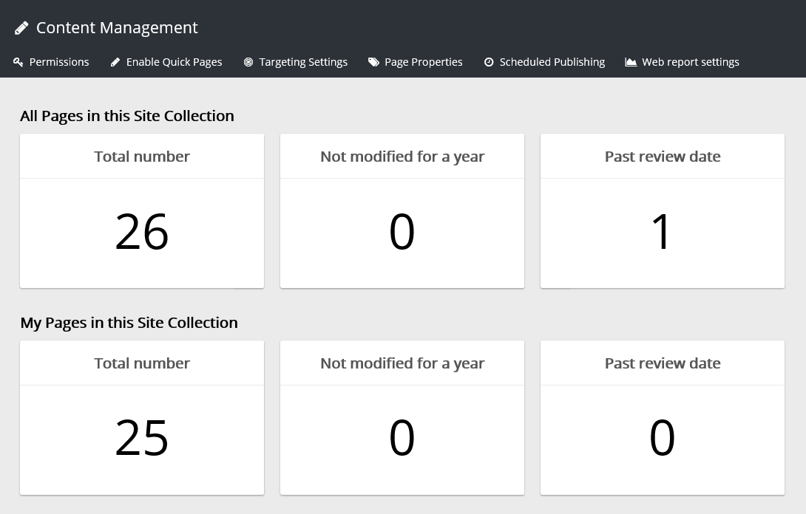
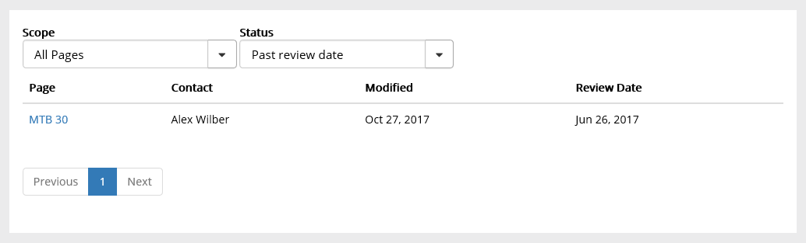

The site collection feature "Omnia Intranet Content management" needs to be activated in order for the Publishing administration page to appear. The Publishing administration page holds the settings for a specific publishing site in the site collection.
The first page displays an overview over the pages in the Site Collection. Here's an example:

Note the two units "Past review date", one for "your" pages, and one for all other pages. Your pages are all pages where you are the contact person (your name is added in the field "Contact"). By clicking the unit you can see a list of the pages in question. You can even click the link to the page to go there. The field "Review Date" must be activated in "Page Properties" in "Edit Mode" for this to work.
Click for more details. Here's an example from a Past review date report:

For Content Management, the following settings are available: